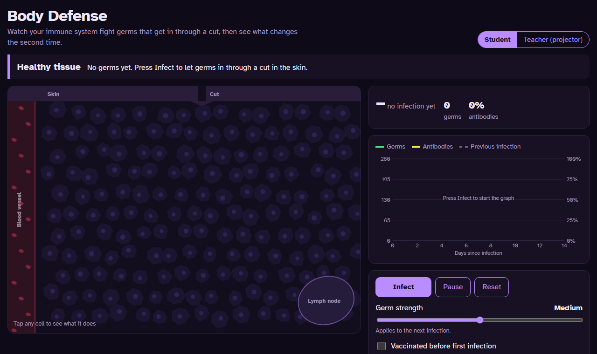
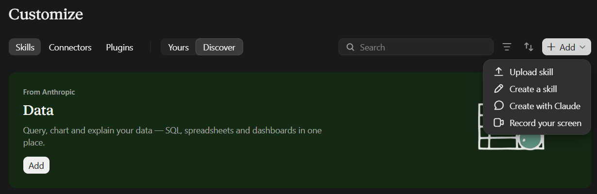
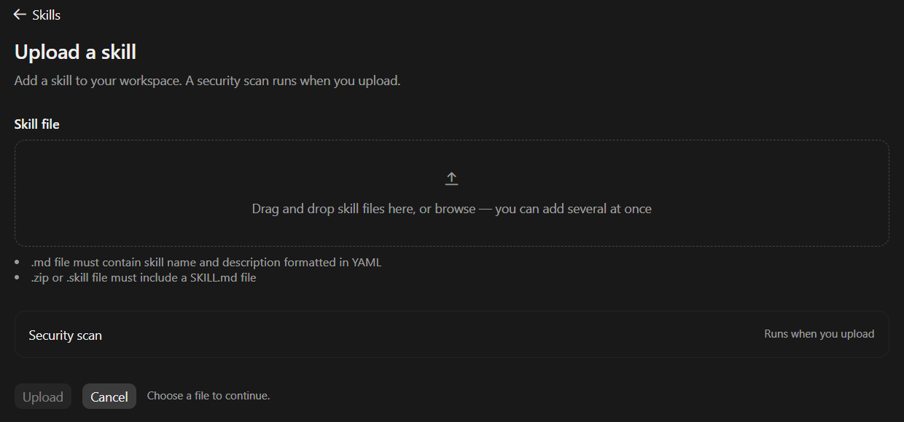
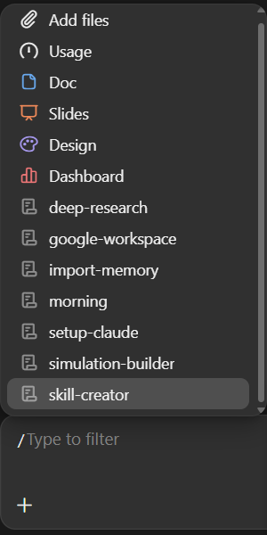
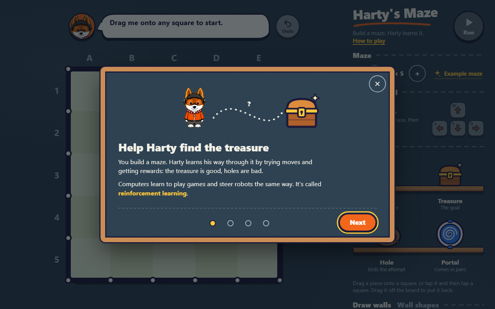
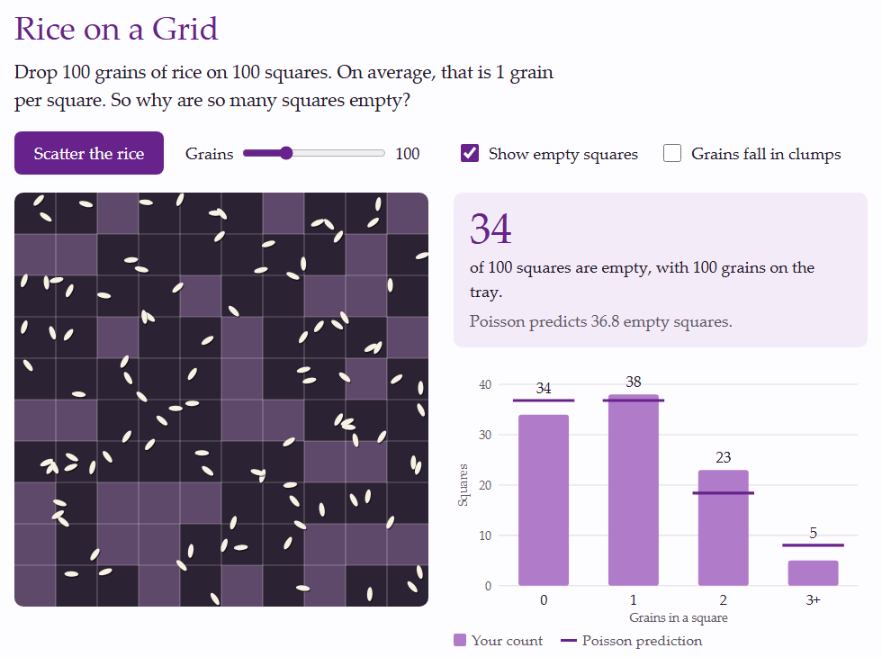

Body Defense
The immune system fights germs that get in through a cut, then remembers them.
The prompts from today, and seven short tasks to build your own class simulation. Any free chatbot, no programming. The result is one HTML file that opens in any browser, also on a phone.
I teach [subject] to [grade]. Next month I teach [topic]. My usual assignment is [assignment]. It is easy to fake with AI. Give me three activity ideas where students use something they collect or do themselves. For each idea, say what students do and what they must explain in their own words. Maximum 50 words per idea. My class has [time], [number] students, and [materials].
Here is my assignment: [paste it]. How easy is it to fake with AI? How can I change it?
What can go wrong if I use you for grading? Give me a list of risks.
What is the difference between a chatbot and an AI agent? Answer me as if I were not a programmer.
Teach me to use you for lesson planning. What can you not do on my plan? Ask me one question at a time.
I saw this claim about AI online: [paste it]. How can I check if it is true?
Work in the same chat from task 2 to task 6. Change the words in [brackets].
Choose something you teach next month.
No idea yet? Try a pendulum, dice averages, projectile motion, or supply and demand.
I teach [topic] to grade [N]. Give me three simulation activities. 30 words each.
Choose one of the three.
Before you ask for code, decide what the student sees. Answer these three questions for the idea you chose, and write your answers in the chat.
Example, a pendulum: the student changes the length. The pendulum swings. A longer pendulum swings slower.
Build this as one HTML file. No external libraries. No internet. Works on a phone.
Windows Notepad: in "Save as type", choose "All files", or the name ends in .txt.
Mac TextEdit: choose Format, then Make Plain Text, before you save.
Some chatbots have a download button. That works too.
Test one case where you know the answer. AI makes mistakes; you check.
Something is wrong:
Fix only this: [problem]. Keep the rest. Give me the whole file.
The code stops in the middle:
Continue the file from where you stopped.
Swap laptops with the next pair. Play with their simulation. Say what you noticed.
The simulation-builder skill teaches Claude these seven tasks. Claude then asks you the questions one at a time, writes the HTML and checks it. It works on a free claude.ai account. It is optional: the prompts above work in any chatbot.
Download the skill (ZIP)Do not unzip it.
In claude.ai, go to Settings, then Capabilities, and turn on code execution ("Create and edit files"). Skills need it.



In a new chat, type / and choose simulation-builder. Or just write: "Help me build a simulation for my class."
Not working? Check that code execution is on, and that the skill is turned on in Customize, then Skills. You can always use the prompts above.
Open them in your browser. Each one is a single HTML file: save it and it works offline.

The immune system fights germs that get in through a cut, then remembers them.

Build a maze, and Harty learns his way to the treasure: reinforcement learning. By Khant Phyo Wai.

Scatter 100 grains on 100 squares. Why are so many squares empty? The Poisson distribution.